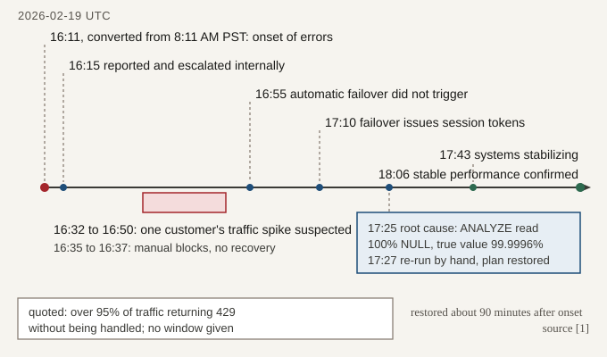
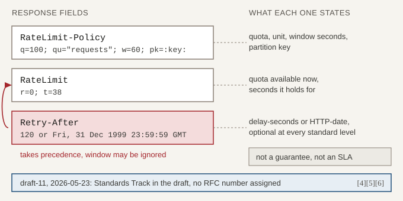
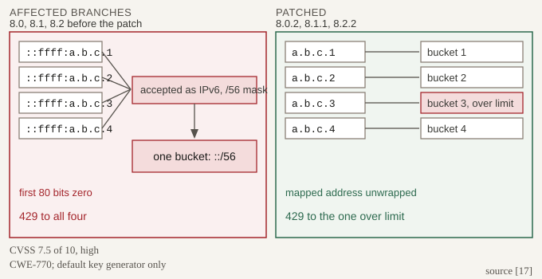
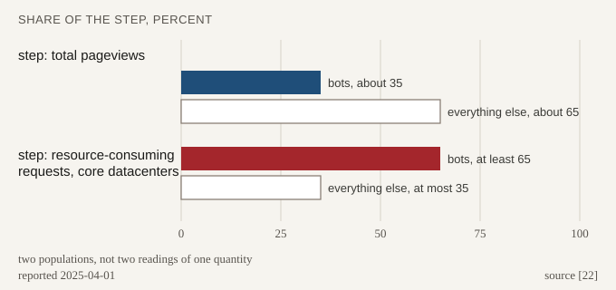
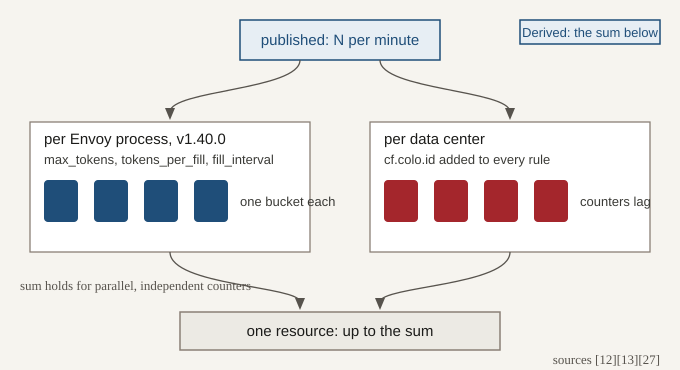

The 429 nobody had earned: what a rate limit actually promises
The one status code the web reserved for refusals is used in production to mean at least five different things, and only one of them is a rate limit.
Clerk's authentication API spent part of 2026-02-19 telling its callers they had sent too many requests. No limit had counted them. The postmortem records that reduced database performance "ultimately led to significant queueing, and shedding the majority of requests with status 429", with "over 95% of traffic returning 429 without being handled".[1]
HTTP
# illustration: a shed refusal as a caller reads it; values invented
HTTP/1.1 429 Too Many Requests
content-type: application/json
# no quota field, so nothing names what the traffic spentThe cause was not a limit. A Postgres automatic ANALYZE misread a column as entirely NULL and flipped the planner onto a plan that consumed nearly all the database's resources; service was restored "approximately 90 minutes later" when the ANALYZE was re-run by hand.[1] The status code was the only part a caller could act on, and on this post's reading of the timeline it is what aimed the first hypothesis at a customer's traffic spike, identified at 16:32.[1]

This post sets out seven decisions a rate limiter publishes whether or not anyone wrote them down, and checks each against what shipping systems send on the wire in October 2026. Every number below is from third-party published work, read on the dates given; none of it was measured here, and the figures and ladders are this post's own constructs.
- Five meanings for one status code, and what RFC 6585 leaves open.
- The wait: computable, optional, spelled differently by every provider.
- The key the caller writes, and one scored CVE.
- The step that costs, and six units shipping systems count.
- One number at the edge, many counters at the resource.
- Usage visible before the first refusal, at four providers.
- The storm the refusal makes, in four dated incidents.
- The close: what the Clerk 429 should have said, field by field.
Afterwards a reader can sort the refusals their own service sends, including the key-derivation bug that arrives looking like an ordinary quota refusal; audit the key the limiter derives on every ingress path; and set the metered step, the limiter count and the failure posture per resource.
The status code says "too many requests" and means at least five different things
HTTP
# illustration: field names as GitHub documents them [7]; values invented
HTTP/1.1 429 Too Many Requests
x-ratelimit-limit: 5000
x-ratelimit-remaining: 0
x-ratelimit-reset: 1760452800
x-ratelimit-resource: core
retry-after: 38
# which limit, how much is left, when it healsRFC 6585, from April 2012, defines 429 as indicating that the user "has sent too many requests in a given amount of time (rate limiting
)", and then declines to say what a user is: "this specification does not define how the origin server identifies the user, nor how it counts requests."[3] Two of the three things a caller needs, the key and the counting rule, are left to the implementer; the third, the wait, is a MAY.[3]
Production filled the gap with meanings of its own. Stripe documents, for its own API, that a 429 without its rate-limit headers "wasn't the result of a rate limit", and may instead be a lock timeout, a 429 with code lock_timeout raised when another request already holds the object.[10] That reading of an absent header is Stripe's rule, not a property of the status code, and the two conditions get opposite client behaviour: the SDKs retry lock timeouts and leave rate-limit 429s to the integration's backoff.[10] The Claude API returns 429 at an organisation's monthly spend cap, with no retry-after header and with error.details.error_code set to enforced_spend_limit_reached, named in the docs as the way to tell it apart from a rate limit.[11]
![HTTP 429 branches into five conditions, each distinguished by a field: a rate limit, identified by x-ratelimit or RateLimit fields; a capacity shed, where no limit was evaluated and, by Stripe's rule for its own API, no rate-limit headers appear; a held lock, with code lock_timeout, which the SDK retries; a spend cap, with error code enforced_spend_limit_reached and no retry-after; and a key-derivation bug, where one collapsed key refused every IPv4 client. A note records that four sort from the response while the fifth needs operator evidence. Labelled Inference, the post's own grouping.](figures/02-one-code-five-refusals.svg)
invalid_request_error. [1][3][10][11][17]A field can name the policy a server declares, while a key the server derived wrongly declares nothing, so four of the five conditions sort from the response and the fifth does not. The Claude Code workspace is the documented exception in the other direction: limits there are checked separately, and requests over them "can instead receive a 429 that carries a retry-after header".[11] The fifth condition is the one that arrives looking ordinary: a key-derivation bug in express-rate-limit returned 429 to every IPv4 client at once, with the fields of a normal quota refusal.[17] The postmortem quotes Clerk's refusals by status alone and no response fields, which is why the hypothesis they implied stood from 16:32 to 16:50.[1]
The wait is computable, optional, and no two providers spell it the same way
The field that would end the guessing has existed since 2012, as a MAY.[3] RFC 9110 gives it two forms, an HTTP-date or delay-seconds as a non-negative decimal integer, with Retry-After: 120 as its syntax example.[4] Its own definition explains the field for a 503 and for any 3xx and never names 429, which lives in a different document, so the capacity refusal and the time-window refusal, the two conditions hardest to tell apart from outside, share one optional mechanism.[4]

The IETF HTTPAPI working group's draft carries the field list above, and its unit is the part that reaches past requests: qu defaults to requests, with content-bytes and concurrent-requests also registered, so a limit can be denominated in payload rather than calls.[5] The time forms differ in kind too: the draft's t is a count of seconds, GitHub's reset an epoch timestamp, the Claude API's an RFC 3339 instant.[5][7][11]
The draft's sharpest move is the one none of the systems in Table A ships: the values need not correlate with the status code, so the contract is not bound to 429 at all.[5] Envoy already computes the number it would publish. In the released v1.40.0 global filter, Retry-After is the largest duration_until_reset among the over-limit descriptors with a one-second floor, and enable_retry_after_header is disabled by default.[26] One reset instant names the same moment for every caller refused in that window, so callers that honour it exactly arrive together. Stripe puts the spreading on the integration, asking for "randomness to the backoff schedule to avoid a thundering herd effect", and the draft bounds the server's half of it: Retry-After "SHOULD NOT reference a point in time earlier than the end of the effective window", so a server spreads by adding time while a client's jitter may also pick a shorter wait.[10][5]
| System | Field vocabulary | Which limit refused | Wait field, by default | Source |
|---|---|---|---|---|
| GitHub REST | x-ratelimit-limit, -remaining, -used, -reset, -resource | x-ratelimit-resource names the primary budget charged; secondary refusals stay unobservable | retry-after if present; else x-ratelimit-reset only when remaining is 0; else a minute or more, backing off | [7] |
| Stripe | rate-limit headers; their absence means it was not a rate limit, on this API | Stripe-Rate-Limited-Reason, five documented values | none documented; the integration backs off with randomness | [10] |
| Claude API | anthropic-ratelimit-{requests, tokens, input-tokens, output-tokens}-{limit, remaining, reset} | tokens-* report the most restrictive limit in effect | retry-after when present; never on the spend cap | [11] |
| Envoy v1.40.0 | x-envoy-ratelimited | the descriptor is exchanged with the limit service, not exposed in that header | off: enable_retry_after_header disabled by default | [26] |
| IETF draft-11 | RateLimit (r, t), RateLimit-Policy (q, qu, w, pk) | pk, the partition counted, not the policy violated | Retry-After takes precedence where it appears | [5] |
Publishing the whole contract is not free, and the draft argues against itself in its own security section: clients "MUST NOT assume that a positive available quota is a guarantee that further requests will be served" and "MUST NOT consider the available quota parameter as a service level agreement", servers should not disclose operational capacity to untrusted parties, and where partition keys identify a user they should expect impersonation.[5] The Claude API says the same: its limits "represent maximum allowed usage, not guaranteed minimums".[11]
The key is written by the caller, and getting it wrong refuses everyone
The draft's advice on keys runs to two clauses and contains the whole problem: servers "SHOULD document how the partition key is generated" and "SHOULD only use information that is present in the request to generate the partition key".[5] On an unauthenticated door, everything present in the request was written by the caller. The key is therefore derived down a ladder, each rung admitted by a checkable fact about the deployment rather than by the name of a header. Clerk's operators picked a key by hand at 16:35, blocking one customer's traffic, and by 16:37 the blocks had "failed to restore the system".[1]
![Illustration labelled Inference. Five descending rungs pairing a key source with what admits it: authenticated credential, admitted by a verified signature; forwarded entry at hop N, a deployment-specific count, admitted by the derived key being verified on every ingress path; socket address, admitted by a direct listener with the port stripped; address prefix slash 32 to slash 64, admitted by a mask applied to real IPv6 only; and a coarse bucket under an aggregate ceiling, treated as entropy rather than identity. Three red arrows mark breaks: a client on a shorter path writes the header, a rotating source port, and IPv4-mapped addresses masked to colon colon slash 56.](figures/04-key-ladder.svg)
express-rate-limit ships seventeen named validation codes beside three warnings, and they read as a field guide to that ladder.[15] ERR_ERL_PERMISSIVE_TRUST_PROXY fires when Express's trust proxy is set to true, because Express then takes the leftmost X-Forwarded-For entry as the client IP, a value a proxy or a malicious client can set; ERR_ERL_UNEXPECTED_X_FORWARDED_FOR fires on the opposite mistake, which usually makes the limit global rather than per-user; and ERR_ERL_FORWARDED_HEADER fires on an RFC 7239 Forwarded header, which Express 5.1.0 and later do not support in trust proxy, so the library ignores it by default.[15]
Lower rungs fail on arithmetic. A key that keeps the source port lets a user "close and re-open their browser to bypass the rate limit timer".[16] A custom IPv6 key generator without subnet masking lets a client rotate inside its own prefix, which the library's ipKeyGenerator helper fixes, with ipv6Subnet validated to the range 32 to 64.[15] The hop count is found empirically, by echoing the resolved IP and raising the number until it matches, so it belongs to one request path through one deployment.[16] The durable requirement is not that number but a check: verify the derived key on every ingress path, because a caller who arrives by a shorter one writes the header the limiter trusts.[15][16]
JavaScript
// needs express-rate-limit 8.0.2, 8.1.1 or 8.2.2 and later: the
// releases patched for CVE-2026-30827 [17]
import { rateLimit, ipKeyGenerator } from 'express-rate-limit';
// trust proxy counts the proxies in front of this listener: a
// deployment-specific number, checked on every ingress path [15][16]
app.set('trust proxy', 2);
app.get('/debug/ip', (req, res) => res.send(req.ip));
const limiter = rateLimit({
windowMs: 60_000,
limit: 100,
// on a patched release this masks IPv6 inside its subnet and leaves
// IPv4 whole: assert ::ffff:a.b.c.1 and ::ffff:a.b.c.2 give two keys [15][17]
keyGenerator: (req) => ipKeyGenerator(req.ip, 56),
});That masking produced the subject's sharpest cautionary case. CVE-2026-30827, published 2026-03-05, is scored CVSS 7.5 of 10, high on the industry severity scale, and classed CWE-770, allocation of a resource without limits.[17] The default key generator applied IPv6 /56 masking to every address net.isIPv6() accepted, including IPv4-mapped forms such as ::ffff:8.8.8.8 that Node returns as request.ip on a dual-stack server; their first 80 bits are zero, so every IPv4 client collapsed onto the single key ::/56.[17]

The impact was denial of service rather than evasion, in the default configuration, on the Linux default of listening on ::; the affected ranges are 8.0.0 to 8.0.1, 8.1.0 and 8.2.0 to 8.2.1, the patched releases 8.0.2, 8.1.1 and 8.2.2, and a key generator was unaffected only where it did not route through the faulty masking.[17] Above the bug sits a slower limit on keying by address at all: Wikimedia's tightening of datacenter and per-source limits pushed crawlers onto residential proxy networks that can span "hundreds of millions of IP addresses", with browser identities spoofed along the way.[23] Cloudflare's answer is to sell better keys, IP only on Free and Pro, and under the column headed Enterprise with Advanced Rate Limiting also ASN, path, JA3/JA4 fingerprints of a client's TLS handshake, and JSON field values.[12]
The counter belongs on the step that costs, which is rarely the request
Wikimedia reported on 2025-04-01 that bots made up about 35 percent of total pageviews and "at least 65%" of the resource-consuming traffic reaching its core datacenters.[22] The populations differ, so these are not two readings of one quantity but what two meters say about the same traffic. At Clerk the step that cost sat deeper still, in a query the planner had turned into one that "returned over 17,000" rows.[1]

GitHub's answer is to stop counting requests and start pricing them. Most REST GET, HEAD and OPTIONS requests cost 1 point and most POST, PATCH, PUT and DELETE cost 5; a GraphQL request costs 1 without mutations and 5 with them, against 900 points per minute per REST endpoint and 2,000 for the GraphQL endpoint.[7] The price list is partial, since some endpoints' point costs are not shared publicly.[7]
The Claude API meters three units per model class and draws the boundary inside the request. Start-tier Claude Opus 5.5 is held to 1,000 requests, 2,000,000 input tokens and 400,000 output tokens per minute, the same model on the Scale tier to 10,000, 10,000,000 and 2,000,000.[11] Only uncached input counts, cache_read_input_tokens excluded, with Claude Haiku 3.5, retired except on Google Cloud, as the documented exception.[11] Where the meter sits in time decides what it can defend. An estimate taken at admission and adjusted during the request, as the Claude API does with input tokens, refuses work before it starts; a concurrency bound such as GitHub's 100 in-flight requests across REST and GraphQL is the only one of the three that constrains work already running; and a score the origin returns in a response header, as in Cloudflare's complexity mode, can only inform the next admission decision.[11][7][13]
| Metered step | Unit | A documented number | What it protects | Source |
|---|---|---|---|---|
| Arriving request | requests per hour, per key | 5,000 per hour per user, shared across their tokens and apps | the published per-caller contract | [7] |
| Write operation | points: a write costs 5, a read 1 | 900 points per minute per REST endpoint | the expensive half of one endpoint | [7] |
| Token produced | output tokens per minute | 400,000, Start-tier Claude Opus 5.5 | inference spend as it is produced | [11] |
| Object mutated | updates per object per hour | 1,000 updates per PaymentIntent per hour | one hot record, not the account | [10] |
| Response of a given status | matching responses per period | counting expression restricted to status 400 | the failure path, not the success path | [13] |
| CPU second | CPU seconds per unit of real time | 90 per 60 seconds, at most 60 for GraphQL; as history, the 2017 SRE chapter's example allocation was 500 CPU seconds per second | the resource itself, not its proxy | [7][21] |
Cloudflare lets the counting expression choose the step outright, and in complexity mode the counter rises by a score of 1 to 1,000,000 that the origin returns in a configured response header; when that header is missing or out of range, the counter is not updated.[13] That is the sharp edge of a well-chosen step: a meter that depends on an upstream's cooperation stops counting silently when the upstream stops cooperating. As history, the 2017 web copy of Google's overload chapter argued the same choice from the capacity side: modelling capacity as "queries per second ... often makes for a poor metric".[21]
One number at the edge arrives at the resource as many
Envoy's local rate limit filter is a token bucket with three fields, max_tokens, tokens_per_fill and fill_interval, configured as 10000, 1000 and 1s in the released v1.40.0 page's own example.[27] One sentence there decides whether the configured number means anything: "By default the rate limits are applied per Envoy process", with the bucket moving to each connection when local_rate_limit_per_downstream_connection is set.[27] Cloudflare partitions for other reasons and lands in the same place, keeping a counter per unique combination of a rule's characteristic values and per data center, because cf.colo.id is added to every rule, with co-located data centers sharing one.[13] Clerk's postmortem names no proxy or gateway at all, pointing only at its own request handlers, so how many instances refused is not in the record.[1]

The vendor states the consequence without softening it: rate limiting rules "are not designed to allow a precise number of requests to reach your origin server", and counters can lag by a few seconds, so some excess gets through.[12]
YAML
# local rate limit: a token bucket, applied per Envoy process by default [27]
token_bucket:
max_tokens: 10000
tokens_per_fill: 1000
fill_interval: 1s
# global rate limit filter: the posture is a field, not an accident [26]
failure_mode_deny: true # 500 when the limit service errors
enable_retry_after_header: true # off by default; the wait already existsSharing one counter is the usual answer to that sum, and a third posture sits between the two: key affinity, routing each partition key to one instance, which is close to what Cloudflare's co-located data centers and Envoy's external limit service already do per descriptor; its failure mode is a hot key landing on one instance, and that reading is inference rather than a documented result.[13][26] The shared store is a dependency rather than a detail, with its own latency and its own failure mode, and express-rate-limit names two ways it miscounts, ERR_ERL_STORE_REUSE when several limiters share one store instance and ERR_ERL_DOUBLE_COUNT when one request increments a key twice.[15] That is why the fail-closed decision sits on Envoy's global filter, the one that calls an external gRPC rate limit service and counts error and failure_mode_allowed responses per cluster.[26]
The approximation error inside a window is the part somebody measured, as history: across 400 million requests from 270,000 distinct sources, Cloudflare's 2017 sliding-window counter wrongly allowed or limited 0.003 percent of them.[14] The fan-out above it is unquantified in every source read here. Refill shape is the other edge: the Claude API warns that 60 requests per minute "might be enforced as 1 request per second", so a short burst fails below the published number, while API Gateway's burst bucket, 5,000 requests by default in most Regions and 1,250 in thirteen named ones, "is not a quota that a customer can control or request changes to".[11][24]
A limit is operable only when usage is visible before the first refusal
GitHub's GET /rate_limit returns limit, remaining, reset and used per resource category, and its own page states that "Accessing this endpoint does not count against your REST API rate limit".[8] The scope of that sentence matters for a caller that polls: the rate-limit documentation adds that calling the endpoint "can count against your secondary rate limit", and that "There is not a way to check the status of your secondary rate limit".[7] A polling caller spends a budget it cannot read. Clerk's callers had none of this surface: the postmortem's first timeline entry is an internal report at 16:15, after an onset it dates to 8:11 AM PST.[1]
| Provider | Reading your own limit | Does reading cost quota | Before the refusal | Raising it | Source |
|---|---|---|---|---|---|
| GitHub | GET /rate_limit, twelve resources | not against the limit it reports; secondary limit status stays unobservable | x-ratelimit-remaining on responses; nothing for secondary limits | published tiers; installation formula | [7][8] |
| Claude API | Rate Limits API, configured limits | not stated on the page read | Console chart: hourly peak against the current limit | tier change; ramp-up limits, which refuse a sharp increase even below the published number, still apply | [11] |
| Cloudflare | operator-side rules, not a caller API | operator-side | counters lag a few seconds | plan: characteristics, periods, rule count | [12][13] |
| Stripe | the refusal names it: Stripe-Rate-Limited-Reason | refusal time only | refusal time only | a request with at least six weeks' notice | [10] |
Underneath the tokens and apps sits the one door with no identity at all: 60 requests per hour unauthenticated, tied to the originating IP.[7] Raising any limit is an operational lead time rather than a configuration change: Stripe asks at least six weeks' notice for a large increase, and GitHub's 2025-05-08 changelog added limits to unauthenticated clones, REST calls and raw downloads, with no numbers published.[10][9] Wikimedia inverted the trade: stronger identification of a bot or tool earns a higher API limit, rolled out from March 2026.[23]
The limiter meets its heaviest traffic while it is refusing
At Clerk the refusals recruited their own callers. The customer-spike hypothesis stood from 16:32 to 16:50, with manual blocks on that customer's traffic between 16:35 and 16:37; at 16:50 the customer's retry mechanism was found to be overly aggressive, and the initial failures were placed inside Clerk's own infrastructure.[1] Both halves were true at once: the retries were real, and they were an effect rather than the cause. The draft states the mechanism in one line, that throttling does not stop clients from sending requests, so separate resource-exhaustion defenses are still needed.[5]
![A four-node cycle: a refusal is sent, the client retries, the arrival rate rises, the limiter and its log work harder, and another refusal is sent. Two red breaks cut the cycle: server signalling, a computed wait spread past the end of the window, and client scheduling, a client that throttles itself above twice its accepts. A third panel, marked not a break, shows bounded aggregation as the cost of refusing: one aggregated line per key per episode. A note reads: throttling does not stop clients sending. Labelled Inference, the post's own loop.](figures/08-storm-loop.svg)
GitHub's August 2026 availability report carries the same loop at a larger size, and separates the trigger from the amplification. On 2026-08-17 "a new peak in traffic pushed one datacenter's load balancers past their limits", a service-mesh sidecar "reached its concurrency limit and did not scale up", and load-balancer nodes exhausted their network flow limits; a latent client retry bug then "sharply amplified traffic to one internal authentication endpoint".[2] Recovery ran through the limiter rather than around it: gateway retries were reduced, retry-triggering requests to the worst-affected endpoint were blocked, and traffic was ramped back gradually.[2]
Two further entries show the throttle as an instrument with a calibration problem. On 2026-08-26 a burst of incoming events "arrived on top of an already-high load and pushed the database past its tipping point"; inbound processing was throttled by hand, and "The throttles used to relieve inbound load were initially set slightly too high".[2] On 2026-08-06 internal rate limits were raised during recovery and customers were warned of "unexpected rate limiting in your workflows".[2]
| Incident | What refused | Reported impact | Duration | The limiter's role | Source |
|---|---|---|---|---|---|
| Clerk, 2026-02-19 | shedding, dressed as 429 | over 95 percent of traffic returned 429 unhandled | restored about 90 minutes after onset; stable confirmed 18:06 UTC | implied a rate-limit story; manual blocks did not help | [1] |
| GitHub Actions, 2026-08-06 | internal limits, raised in recovery | at least 74 organisations, incident-wide | 10 hours 42 minutes | throttle as a recovery tool; runners retried revoked jobs | [2] |
| GitHub front door, 2026-08-17 | load balancers and a sidecar past their limits | 56.07 percent of front-door requests to the affected services, at peak | 7 hours 35 minutes | capacity failure, amplified by a client retry bug; blocking retries recovered it | [2] |
| GitHub events, 2026-08-26 | inbound processing, throttled by hand | more than 1 in 5 run starts per minute, at peak | 2 hours 50 minutes | throttles "initially set slightly too high" | [2] |
The caller's half of the loop has a published method, in the 2017 web copy of Google's overload chapter: a client counts its requests and its accepts over the last two minutes and begins rejecting locally once requests exceed K times accepts, with the 2x multiplier the text prefers.[21] A smaller K cuts in earlier and throws away requests the server would have accepted, which follows from the ratio rather than from any reported result, and bounding the attempts is the lever GitHub's own follow-up asks for, a review of retry and backoff limits across gateways and clients so that a partial degradation cannot be amplified into a broader overload.[2]
What a logging storm costs is the one claim here with no dated industry number behind it. The single instance found is small and precise: on 2026-09-22 a single-maintainer Go project recorded 87,073 rate-limit 429 responses in one lab ramp-up test, each written at WARN, argued to drown genuine warnings and mass-trigger alerts, and fixed by moving 429s to INFO while other 4xx stayed at WARN.[25] A search on 2026-10-14 for a vendor, standards or peer-reviewed figure on log-volume amplification found none, so this rung rests on the retry-amplification incidents above plus that one test.[25]
What the Clerk 429 should have said
Over 95 percent of Clerk's traffic on 2026-02-19 received a refusal that no limit had produced, and the condition behind it already had a spelling: 503, with an optional Retry-After, in RFC 9110.[1][4] The same specification declines to make that the rule, noting that the existence of 503 "does not imply that a server has to use it when becoming overloaded", so the swap pays only where the wait is actually sent and the shed response is cheap to answer.[4] The postmortem names no load balancer, proxy or gateway as the thing that answered, pointing in that passage only at its own request handlers.[1] That is the uncomfortable part of the case, because 429 is what a capacity device sends when nobody chooses otherwise: Envoy's local rate limit filter returns 429 by default, the status is configurable, and setting a custom status stops the filter emitting Retry-After at all.[27]
| Decision | The example or failure mode named above | What the dated evidence shows | Change on Monday |
|---|---|---|---|
| Which no it is | one status code for conditions needing different client behaviour | Clerk: over 95 percent of traffic got 429 for a database problem [1] | find every default that emits a 429, then give each condition its own field |
| The wait, meaning when a caller may return | Retry-After optional at every standard level | Envoy v1.40.0 computes it and ships the header off [26] | send the computed value, spread past the end of the window |
| The key, meaning what the counter counts against | a key derived from a header the caller writes | CVE-2026-30827: every IPv4 client on one key, scored 7.5 of 10 [17] | print the derived key for a request on every ingress path |
| The metered step | the arriving request, whatever it costs | bots: about 35 percent of pageviews, at least 65 percent of expensive requests [22] | meter where the cost is, in its own unit |
| Topology, and what runs when the limiter cannot | one counter per process or per data center; a library default when the store is unreachable | Envoy counts per process, Cloudflare per data center, and failure_mode_deny is an explicit field [27][13][26] | count the instances, share or pin the state, then set the posture per resource |
| Usage visible before the first refusal | a budget that is spent before it can be read | GitHub: no way to check secondary limit status [7] | alert on 429s that arrive while remaining is above zero |
| The refusal's own noise | one warning line per rejection | 87,073 warning lines in one ramp-up test [25] | aggregate to one line per key per episode, with a cap on keys |
Rewriting the opening response field by field is the shortest statement of the whole argument. The status changes, because the condition was capacity, not the caller's count in a window. The limit field disappears, because a shed request was counted against nothing, which is this post's Inference from a postmortem that quotes no fields. The key disappears, because nothing was attributed. What remains is a wait, and the honest value for it would be the service's own recovery estimate; the 120 below is RFC 9110's syntax example, not an estimate anyone made.[1][4]
HTTP
# illustration: the condition Clerk had, spelled as RFC 9110 spells 503 [1][4]
# 120 is the RFC's syntax example, not a recovery estimate
HTTP/1.1 503 Service Unavailable
retry-after: 120
content-type: application/json
# the detail line is this post's Inference, not the postmortem's wording [1]
{"error": "capacity", "detail": "no rate limit counted this request"}Two more things change in a codebase that takes this seriously, beyond the Monday column above, and neither needs a new limiter.
- On the calling side, follow the documented order: honour retry-after, fall back to x-ratelimit-reset only when remaining is 0, otherwise wait at least a minute with exponential backoff, bound the attempts, and reject locally once requests pass twice the accepts.[7][2][21]
- On the serving side, assert in a test that two distinct IPv4-mapped addresses produce two keys on a patched release, and that the key a short ingress path yields matches the address the listener saw.[17][15][16]
Sources
- Clerk, "Postmortem: Clerk System Outage (February 19, 2026)", 2026-02-19, re-read 2026-10-14. https://clerk.com/blog/2026-02-19-system-outage-postmortem
- GitHub, "GitHub Availability Report: August 2026", 2026-09-09, re-read 2026-10-14. https://github.blog/news-insights/company-news/github-availability-report-august-2026/
- IETF, "RFC 6585: Additional HTTP Status Codes", section 4 (429 Too Many Requests), April 2012. https://www.rfc-editor.org/rfc/rfc6585.html
- IETF, "RFC 9110: HTTP Semantics", section 10.2.3 (Retry-After) and section 15.6.4 (503), June 2022. https://www.rfc-editor.org/rfc/rfc9110.html
- IETF HTTPAPI Working Group, "RateLimit Header Fields for HTTP", draft-ietf-httpapi-ratelimit-headers-11, 2026-05-23, re-read 2026-10-14. https://www.ietf.org/archive/id/draft-ietf-httpapi-ratelimit-headers-11.html
- IETF Datatracker, "draft-ietf-httpapi-ratelimit-headers" document status page, revision 11 dated 2026-05-23, re-read 2026-10-14. https://datatracker.ietf.org/doc/draft-ietf-httpapi-ratelimit-headers/
- GitHub, "Rate limits for the REST API", re-read 2026-10-14. https://docs.github.com/en/rest/using-the-rest-api/rate-limits-for-the-rest-api
- GitHub, "REST API endpoints for rate limits", re-read 2026-10-14. https://docs.github.com/en/rest/rate-limit/rate-limit
- GitHub, "Updated rate limits for unauthenticated requests", changelog, 2025-05-08. https://github.blog/changelog/2025-05-08-updated-rate-limits-for-unauthenticated-requests/
- Stripe, "Rate limits", re-read 2026-10-14. https://docs.stripe.com/rate-limits
- Anthropic, "Rate limits (Claude API)", re-read 2026-10-14. https://platform.claude.com/docs/en/api/rate-limits
- Cloudflare, "Rate limiting rules", last updated 2026-08-25, re-read 2026-10-14. https://developers.cloudflare.com/waf/rate-limiting-rules/
- Cloudflare, "How Cloudflare determines the request rate", last updated 2026-04-16, read 2026-10-14. https://developers.cloudflare.com/waf/rate-limiting-rules/request-rate/
- Cloudflare, "How we built rate limiting capable of scaling to millions of domains", 2017-06-07 (quoted as history). https://blog.cloudflare.com/counting-things-a-lot-of-different-things/
- express-rate-limit, "Error codes", re-read 2026-10-14. https://express-rate-limit.mintlify.app/reference/error-codes
- express-rate-limit, "Troubleshooting proxy issues", re-read 2026-10-14. https://express-rate-limit.mintlify.app/guides/troubleshooting-proxy-issues
- GitHub Advisory Database, "GHSA-46wh-pxpv-q5gq / CVE-2026-30827: IPv4-mapped IPv6 addresses collapse per-client rate limiting", published 2026-03-05, updated 2026-03-09, re-read 2026-10-14. https://github.com/advisories/GHSA-46wh-pxpv-q5gq
- Kubernetes, "API Priority and Fairness", read 2026-10-14. https://kubernetes.io/docs/concepts/cluster-administration/flow-control/
- Envoy Proxy, "Global rate limit filter", latest documentation build, read 2026-10-14 when it rendered "envoy 1.41.0-dev-5514ed documentation". https://www.envoyproxy.io/docs/envoy/latest/configuration/http/http_filters/rate_limit_filter
- Envoy Proxy, "Local rate limit filter", latest documentation build, read 2026-10-14 when it rendered the 1.41.0-dev documentation. https://www.envoyproxy.io/docs/envoy/latest/configuration/http/http_filters/local_rate_limit_filter
- Google / O'Reilly, "Site Reliability Engineering", chapter 21, "Handling Overload", 2017 web copy read 2026-10-14 (quoted as history). https://sre.google/sre-book/handling-overload/
- Wikimedia Foundation, "How crawlers impact the operations of the Wikimedia projects", 2025-04-01. https://diff.wikimedia.org/2025/04/01/how-crawlers-impact-the-operations-of-the-wikimedia-projects/
- Wikimedia Foundation, "Quo Vadis, Crawlers? Progress and what's next on safeguarding our infrastructure", 2026-03-26, updated 2026-04-15. https://diff.wikimedia.org/2026/03/26/quo-vadis-crawlers-progress-and-whats-next-on-safeguarding-our-infrastructure/
- Amazon Web Services, "Amazon API Gateway quotas", read 2026-10-14. https://docs.aws.amazon.com/apigateway/latest/developerguide/limits.html
- task-api (JonasBorgesLM), single-maintainer open-source project, "Log amplification: rate-limited (429) requests are logged at WARN", issue #299, 2026-09-22. https://github.com/JonasBorgesLM/task-api/issues/299
- Envoy Proxy, "Global rate limit filter", v1.40.0 documentation (released version), read 2026-10-14. https://www.envoyproxy.io/docs/envoy/v1.40.0/configuration/http/http_filters/rate_limit_filter
- Envoy Proxy, "Local rate limit filter", v1.40.0 documentation (released version), read 2026-10-14. https://www.envoyproxy.io/docs/envoy/v1.40.0/configuration/http/http_filters/local_rate_limit_filter
- Envoy Proxy, "Envoy version history, v1.40", read 2026-10-14: 1.40.0 is the latest release, initial release 2026-10-13. https://www.envoyproxy.io/docs/envoy/v1.40.0/version_history/v1.40/v1.40